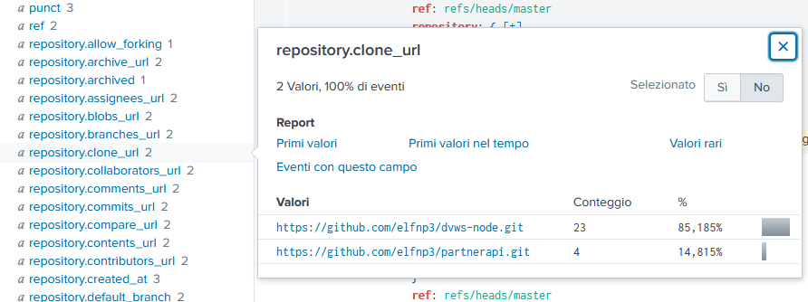
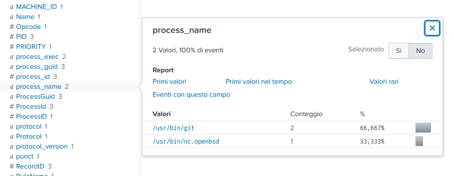
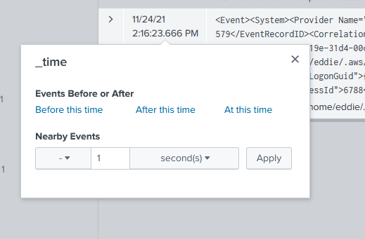

Splunk¶
You can access this challenge’s webpage here.
There are 8 tasks to complete
The Tasks¶
Task 1¶
To complete this task we used this query. This finds every command ran, which created a process, that begins with git.
index=main sourcetype=journald source=Journald:Microsoft-Windows-Sysmon/Operational EventCode=1 CommandLine="git*"| top limit=50 CommandLine
By using this and going into the statistics field, we know that the git status command was executed five times, and since it is at the top, it’s the most used.

Task 2¶
This is the query we used. This lists every command ran, that created a process, which contains “partnerapi”.
index=main sourcetype=journald source=Journald:Microsoft-Windows-Sysmon/Operational EventCode=1 CommandLine="*partnerapi*"| top limit=55 CommandLine
Note
In sysmon.
Event Code 1 ==> Process Creation
Event Code 2 ==> A process changed a file creation time
Event Code 3 ==> Network connection
Scroll a bit, and you will find it. The answer is git@github.com:elfnp3/partnerapi.git
Task 3¶
This finds everything that contains partnerapi.
index=main sourcetype=journald source=Journald:Microsoft-Windows-Sysmon/Operational *partnerapi*| top limit=200 CommandLine
For this one we have to scroll quite a lot. The command we are searching for is docker compose up. (Event at 24/11/21 14:08:01,908)
Task 4¶
We have to search something in the net. Let’s use this to list every repository cloned.
index=main sourcetype=github_json "repository.clone_url"="*"
Click on repository.clone_url filter. You will see two repositories.

Let’s visit https://github.com/elfnp3/dvws-node.git. Here we find a link to another repo, https://github.com/snoopysecurity/dvws-node. That’s the one we were looking for.
Update 2022.01.06
You don’t have to visit external websites anymore. Instead of looking for repository.clone_url, you should look for repository.name. The updated answer is dvws-node
Task 5¶
index=main sourcetype=journald source=Journald:Microsoft-Windows-Sysmon/Operational *npm*| top limit=200 CommandLine
Similarly to the others, this query searches for anything related to npm.
At event 24/11/21 14:16:20,814 we find this command: node /usr/bin/npm install holiday-utils-js.
The library name we are looking for is holiday-utils-js
Task 6¶
We used the query directly provided by the elf
index=main sourcetype=journald source=Journald:Microsoft-Windows-Sysmon/Operational EventCode=3 user=eddie NOT dest_ip IN (127.0.0.*) NOT dest_port IN (22,53,80,443)
Look into the process_name field.

Angel Candysalt mentioned nc.openbsd as a command that could be used maliciously. So the answer is /usr/bin/nc.openbsd
Task 7¶
This one’s a bit more complicated compared to the previous levels.
By using this query we can find every process created which contains nc.openbsd
index=main sourcetype=journald source=Journald:Microsoft-Windows-Sysmon/Operational EventCode=1 *nc.openbsd*
There is only one entry. Open it and view the ParentProcessId field.

Ok. Now that we know the ParentProcessId (6788), we have to find everything it has executed.
We search for every process created by parent id 6788.
index=main sourcetype=journald source=Journald:Microsoft-Windows-Sysmon/Operational EventCode=1 ParentProcessId=6788
In the second box (24/11/21 14:16:23,666) we see a long CommandLine instruction.
cat /home/eddie/.aws/credentials /home/eddie/.ssh/authorized_keys /home/eddie/.ssh/config /home/eddie/.ssh/eddie /home/eddie/.ssh/eddie.pub /home/eddie/.ssh/known_hosts
Seems like 6 files were accessed by this script.
Task 8¶
We used the same query of the previous task.
index=main sourcetype=journald source=Journald:Microsoft-Windows-Sysmon/Operational EventCode=1 ParentProcessId=6788
Go on the box that contains the malicious command, and click on the time field. Set minus 1 second. We will see every event that happend in the second before the malicious command execution.

Remove ParentProcessId=6788 from the query, or use this:
index=main sourcetype=journald source=Journald:Microsoft-Windows-Sysmon/Operational EventCode=1
Now we are seeing the events in the second before. The event at 11/24/21
2:16:23.653 PM executes a bash script called preinstall.sh. That’s exectly what we needed.
After inserting every answer in the Splunk page, Santa calls us whiz.
The challenge is over. Bye!